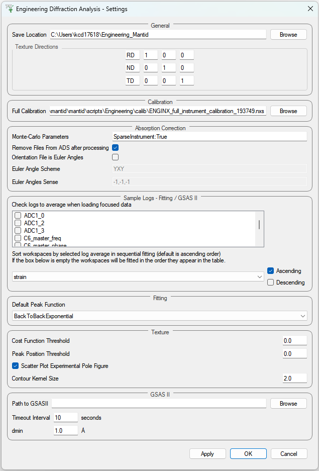
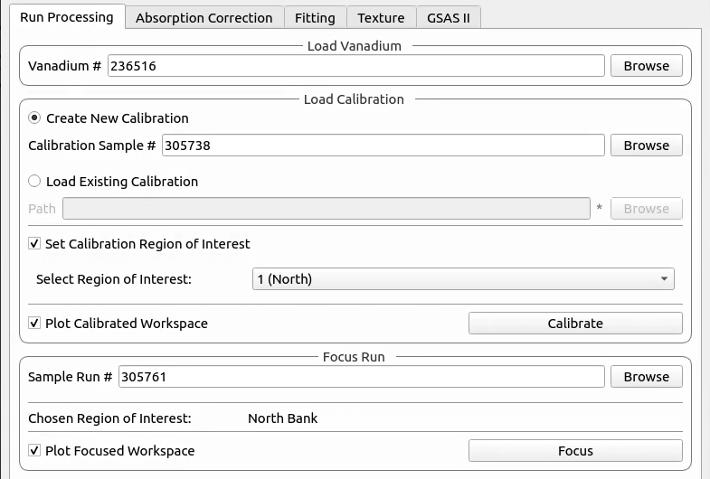
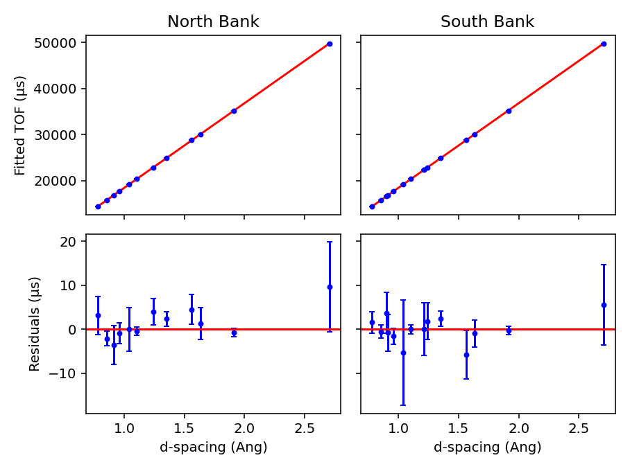
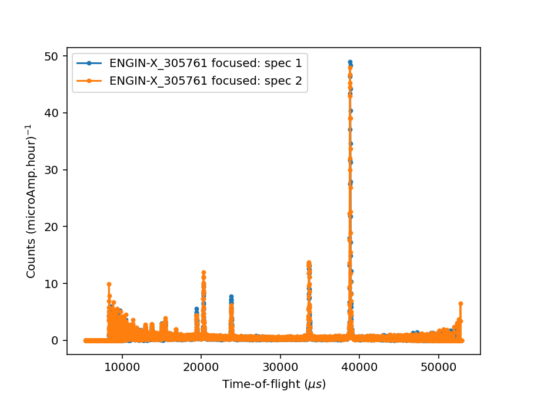
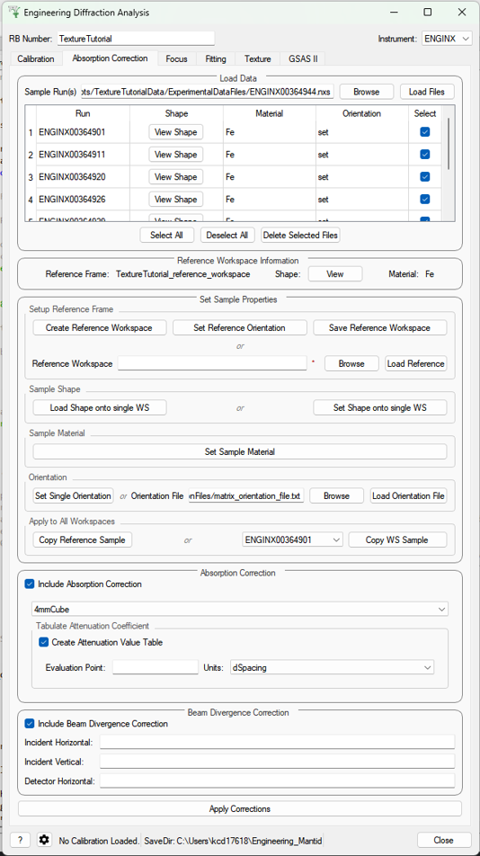
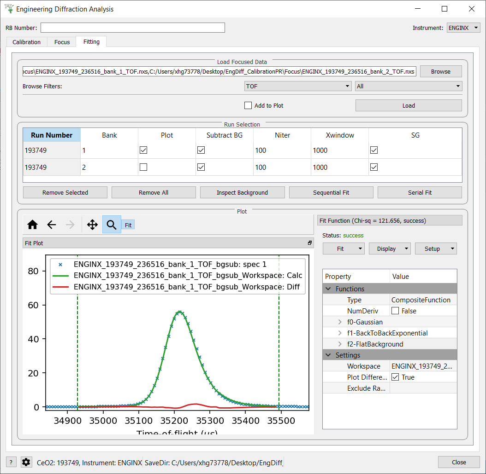
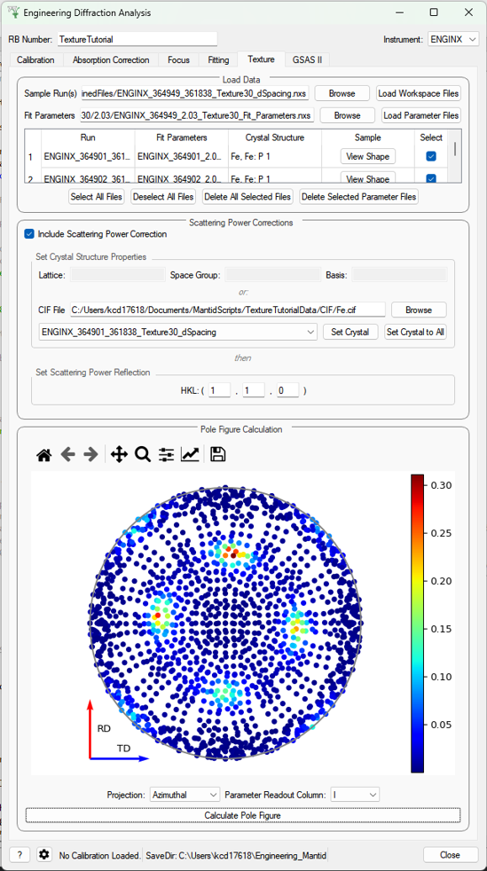
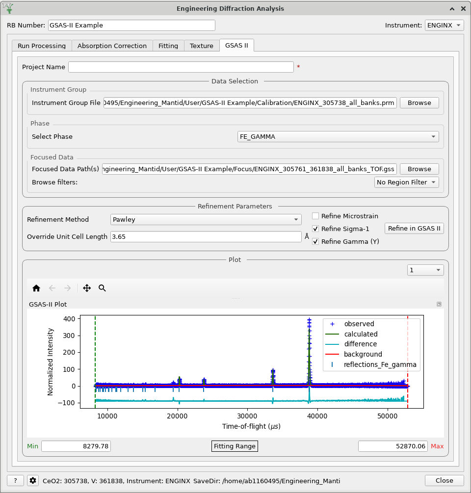

Engineering Diffraction#
Interface Overview#
This custom interface will integrate several tasks related to engineering diffraction. In its current state it provides functionality for creating and loading calibration files and focusing ENGINX run files.
Functionality for performing single peak fitting on focused run files is currently in progress.
This interface is under active development.
General Options#
- RB Number
The reference number for the output paths (usually an experiment reference number at ISIS). Leaving this field empty will result in no user directories being created, and only the general directory will be used for file storage.
- Instrument
Select the instrument (ENGINX or IMAT). Currently only ENGINX is fully supported.
- ?
Show this documentation page.
- Settings
Provides a range of options that apply across the entire interface, currently providing the option to change the default output directory. The user can also select the log values from a list which are loaded with data in the fitting tab and select a log by which to sort the runs in a sequential fit. There is also an option to specify a peak function to fit (limited to a subset of all peak functions that are recommended for the UI) which will be set on opening the interface. Note that the user can select any peak function to fit (even a non-recommended one) at a later point when adding a peak in the fitting tab.
- Close
Close the interface.
{kind=link}

Other Information#
- Red Stars
Red stars next to browse boxes and other fields indicate that the file could not be found. Hover over the star to see more information.
- Status Bar
The status bar shows the calibration run numbers the GUI is currently using. It also displays the save directory (which can be changed in the settings).
- Saved File Outputs
The location of files saved by the GUI during processing will be shown in the mantid messages log.
Note: The locations are shown at “Notice” level, so may not appear if the messages log is on the incorrect setting.
Run Processing#
This tab currently provides a graphical interface to create and visualise new calibrations and focussed runs.
It also allows for the loading of GSAS parameter files (.prm) created by the calibration process
to load a previously created calibration into the interface.
It also allows for the focusing of data files - summing up spectra in a given region of interest. To do this a new or existing calibration must be created or loaded
For both calibration and focussing, a vanadium run should also be supplied for normalisation.
Parameters#
- Vanadium Number
The run number or file path used to correct the calibration and focused data files.
{kind=link}

Calibration#
When loading an existing calibration, the fields for creating a new calibration will be automatically filled, allowing the recreation of the workspaces and plots generated by creating a new calibration.
The Plot Output check-box will plot the fitted TOF as a function of d-spacing for the ceria peaks in each group
(typically a bank) when a new calibration is calculated.
Creating a new calibration file generates instrument parameter files for the selected region of interest.
If both banks are selected then two additional .prm files are created - one for each individual bank.
The calibration files are written to the directory:
<CHOSEN_OUTPUT_DIRECTORY>/Calibration/
If an RB number has been specified the files will also be saved to a user directory in the base directory:
<CHOSEN_OUTPUT_DIRECTORY>/User/<RB_NUMBER>/Calibration/
In the case the ROI being Texture20 or Texture30 the files are saved to only one directory (the latter if an RB
number is specified, otherwise the former) - this is to limit the number of files being written.
Cropping#
The interface also provides the ability to restrict a new calibration to a particular region of interest:
one of the two banks on ENGIN-X, a custom grouping file (.cal or .xml files), a list of spectra (referred to as
cropped), Texture20 grouping (consists of 10 groupings per detector bank - 20 in total) and Texture30 (15
groupings per detector bank - 30 in total).
Parameters#
- Calibration Sample Number
The run number for the calibration sample run (such as ceria) used to calibrate experiment runs.
- Path
The path to the GSAS parameter file (
.prm) to be loaded.- Region Of Interest
Select a bank to crop to or specify a custom spectra will be entered.
- Custom Grouping File
The path to a custom
.calor.xmlfile with the desired detector groupings.- Custom Spectra
A comma separated list of spectra to restrict the calibration to. Can be provided as single spectrum numbers or ranges using hyphens (e.g. 14-150, 405, 500-600).
{kind=link}

Focus#
The data will be focused over the region of interest selected during calibration. Files can be selected by providing run numbers or selecting the files manually using the browse button.
Ticking the Plot Focused Workspace checkbox will create a plot of the focused spectra for each of the focused runs
when the algorithm is complete.
Clicking the Focus button will begin the focusing algorithm for the selected run files. The button and plotting
checkbox will be disabled until the fitting algorithm is complete.
The focused output files are saved in NeXus, GSS, and TOPAS format. All of these files are saved to:
<CHOSEN_OUTPUT_DIRECTORY>/Focus/
If an RB number has been specified the files will also be saved to a user directory:
<CHOSEN_OUTPUT_DIRECTORY>/User/<RB_NUMBER>/Focus/
In the case the ROI being Texture20 or Texture30 the files are saved to only one directory (the latter if an RB
number is specified, otherwise the former) - this is to limit the number of files being written.
Parameters#
- Sample Run Number
The run numbers of or file paths to the data files to be focused.
- Chosen Region Of Interest
Select which bank to restrict the focusing to or allow for the entry of custom spectra (this is carried over from the calibration).
{kind=link}

Absorption Correction#
This tab allows corrections to be applied to the input data files, as well as attaching sample information, such as shape, material and orientation. Additional functionality is to correct experimental intensity for beam divergence and to calculate a table of attenuation coefficients for a given bin in the spectra.
{kind=link}

Parameters#
- Sample Run(s)
The run numbers of or file paths to the data files to be corrected.
- Reference Workspace
The file path to a reference workspace with the default sample information (sample shape in neutral positioner orientation and material)
- Orientation File
The file path to the orientation data for the experiment. This is either given as a collection of flattened rotation matrices or euler rotation angles
- Custom Gauge Volume File
File path to an XML file containing a Constructive Solid Geometry description of the gauge volume geometry
- Evaluation point
Position along the spectra x-axis where the attenuation value saved into the table should be evaluated
- Units
Unit the x-axis should be in when getting the attenuation at the evaluation point
- Incident Horizontal
The horizontal component of the divergence of the incident beam (in radians)
- Incident Vertical
The vertical component of the divergence of the incident beam (in radians)
- Detector Horizontal
The horizontal component of the divergence of the scattered beam (in radians) - currently this correction assumes this is the same for all detector groups
Settings Parameters#
- Texture Directions
Defines the intrinsic directions of the sample, which will be used for plotting and calculating pole figures. The second axis (second row of the matrix) is always the normal to the pole figure plane. Both the vectors and the labels of these axes can be modified here
- Monte Carlo Parameters
Python dictionary-style string for input parameters to the MonteCarloAbsorption v1 algorithm, where keywords and values are given as
keyword1:value1, keyword2, value2- Remove File from ADS after processing
Flag for whether the calculated corrected workspaces need to be kept in the ADS (flagging them for removal frees up system memory)
- Orientation File is Euler Angles
Flag for notifying whether the orientation file which will be provided in the correction tab is a text file with euler angles or whether each line is a flattened matrix
- Euler Angle Scheme
Lab-frame axes that the euler angles are defined along, when in neutral position
- Euler Angles Sense
The sense of the rotation around each euler axis where 1 is counter clockwise and -1 is clockwise
{kind=link}
Fitting#
This tab will allow for plotting and peak fitting of focused run files.
{kind=link}

Focused run files can be loaded from the file system into mantid from the interface. The interface will keep track of all the workspaces that it has created from these files. When a focused run is loaded, the proton charge weighted average (and standard deviation) of the log values set in the settings options are calculated and stored in a grouped workspace accessible in the main mantid window.
Loaded workspaces can be plotted in the interface and the mantid fitting capability can be accessed from the ‘Fit’ button on the plot toolbar. This allows for the user to select peaks of any supported type (the default is BackToBackExponential) by right-clicking on the plot. The initial parameters can be varied interactively by dragging sliders (vertical lines on the plot). After a successful fit the best-fit model is stored as a setup in the fit browser (Setup > Custom Setup) with the name of the workspace fitted. Selecting this loads the function and the parameters and the curve can be inspected by doing Display > Plot Guess.
The output from the fit is stored in a group of workspaces that contains a matrix workspace of the fit value and error for each parameter in the model. If there is more than one of the same function, the parameters are stored in the same workspace with different x-values. For example, if there were two Gaussian peaks then there would be a workspace for each parameter of the Gaussian (i.e. Height, PeakCentre, Sigma) each of which will have two columns corresponding to each peak. Each workspace has a spectra per run loaded (each row in the table of the UI fitting tab). In general different models/functions could be fitted to each run, so when there is a parameter that does not exist for a run (or that run has not yet been fitted), the Y and E fields in the relevant row are filled with NaNs. The group of fit workspaces also contains a table workspace that stores the model string that can be copied into the fit browser (Setup > Manage Setup > Load From String).
The workspaces can be fitted sequentially (sorted by the average of a chosen log in the settings) or serially (fitted with the same initial parameters). If a valid model is present in the fit browser then the Sequential Fit and Serial Fit buttons (on the plot toolbar) will be enabled - it is not necessary to run an initial fit.
The user may want to fix or constrain certain model parameters, which can be done in the usual way in the fit browser. The sequential fit will populate the fit tables as above and store the model in the Custom Setups.
Parameters#
- Focused Run Files
A comma separated list of files to load. Selecting files from the file system using the browse button will do this for you.
- File Filters
Choose to filter by xunit (TOF or d-spacing) and region of interest (e.g. North Bank).
Texture (Pole Figure)#
This tab allows data to be reduced into pole figure tables, comprising of alpha and beta angles (location of detector group relative to sample axes in spherical coordinates) and an optional attached value for that detector group. The tab also plots these pole figure tables as a pole figure in the panel beneath.
{kind=link}

Parameters#
- Sample Run(s)
The run numbers of or file paths to the data files.
- Fit Parameters
The workspace names of or file paths to the Table Workspaces with the values to be added to the pole figure table - expected to have one row per spectra in the corresponding workspace.
- Lattice
String representation of the crystal lattice (eg.
2.8665 2.8665 2.866, see Crystal Structure concept page)- Space Group
String representation of the crystal space group (eg.
I m -3 m, see Crystal Structure concept page)- Basis
String representation of the crystal basis (eg.
Fe 0 0 0 1.0 0.05; Fe 0.5 0.5 0.5 1.0 0.05, see Crystal Structure concept page)- HKL
The HKL of the reflection that has been fit
- Projection
The 2D projection method of displaying the Pole Figure Table data (options are azimuthal or stereographic)
- Parameter Readout Column
Which column of the parameter table workspaces to read to find the values which should be included in the pole figure table
Settings Parameters#
- Cost Function Threshold
The maximum cost function value for a given spectra’s fit to be plotted in the pole figure
- Peak Position Threshold
The maximum deviation in peak position from the expected position for a given spectra’s fit to be plotted in the pole figure. Expected position is either mean of all peaks or, if provided, peak position of given HKL
- Scatter Plot Experimental Pole Figure
Flag for whether the experimental pole figure should have individual detector groups plotted as scatter points (checked), or should be interpolated and given as a contour plot (unchecked)
- Contour Kernel Size
Sigma value of the gaussian smoothing kernel applied before the interpolation
Buttons/Functions#
- Load Workspace Files
Loads the selected sample runs into the table
- Load Parameter Files
Loads the selected table workspaces into the table, assigning them to each row currently without an assigned table, in turn
- Select All Files
Sets all the rows of the table as selected
- Deselect All Files
Sets all the rows of the table as unselected
- Delete All Selected Files
Deletes all rows of the table which are set as selected
- Delete All Selected Parameter Files
Removes all the set parameter files for the rows of the table that have been selected
- View Shape
Pops up a plot of the sample shape on a given workspace, along with the relative orientation of sample axes (defined in the settings)
- Set Crystal
Takes the crystal structure defined in either the CIF or the lattice/space group/basis inputs and applies it to the workspace in the drop down menu
- Set Crystal to All
Takes the crystal structure defined in either the CIF or the lattice/space group/basis inputs and applies it to all the selected workspaces
- Calculate Pole Figure
Creates the pole figure tables and plots the corresponding pole figure
GSAS-II Refinement#
This tab calls GSAS-II python interface (path to GSAS-II supplied by the user in the interface settings).
Currently only Pawley refinements are supported and the lattice parameters in the .cif phase file can be overidden.
Parameters#
- Project Name
Name of the GSAS project file.
- Instrument Group
Path to
.prmfile produced by the Calibration tab (only one instrument file is supported and will be applied to each data file)- Phase
Path to the
.ciffile defining the initial crystal structure (more than one path can be supplied, the lattice parameters will be overridden for the first phase only).- Focused Data
Path to focused
.gssfiles (note it should have the same number of spectra as in.prmfile and contains multiple banks)- Refinement Method
Only Pawley refinement currently supported
- Override Unit Cell Length
Lattice parameters (a, b, c, alpha, beta, gamma) can be supplied to overwrite the lattice parameters in the first
.ciffile
Refine Microstrain
Refine Sigma_1
Refine Gamma
{kind=link}

Categories: Interfaces | Diffraction